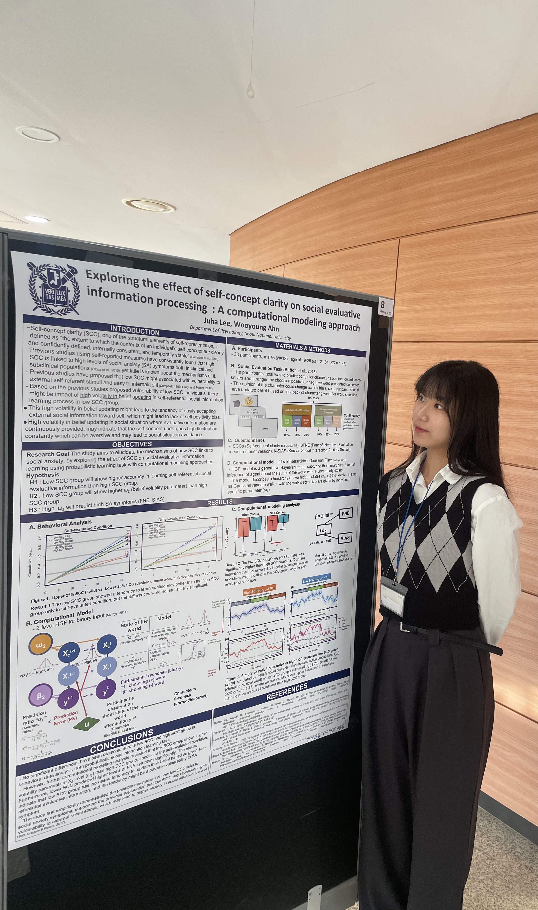

Volatility Inference in Type-I Bipolar Disorder
Investigating how altered volatility beliefs and inflexible belief updating contribute to aberrant decision making in Type-I bipolar disorder.
Computational Psychiatry · Decision Making
M.A. student in Clinical Psychology at Seoul National University. Investigating computational mechanisms underlying learning, belief formation, and decision making in psychiatric disorders.

I am an M.A. student in Clinical Psychology at the CCS Lab, Department of Psychology, Seoul National University.
My research focuses on computational psychiatry, belief formation, reinforcement learning, and decision making in psychiatric disorders.
Department of Psychology
Seoul National University
Computational Psychiatry
Decision Making
Reinforcement Learning
Cognitive Neuroscience
Investigating how altered volatility beliefs and inflexible belief updating contribute to aberrant decision making in Type-I bipolar disorder.
Investigating how self-concept clarity influences the way individuals process and integrate self-referential social information, and how these mechanisms relate to social anxiety symptoms.



Presented a poster on bipolar disorder at the Computational Psychiatry Conference (CPC), Yale University.
Joined the CCS Lab at Seoul National University as an M.A. student in Clinical Psychology.
Won Second Prize at the Brain-Mind-Behavior Symposium for research on self-concept clarity.
Email: juhalee@snu.ac.kr
GitHub: github.com/juhajulia
CCS Lab: ccs-lab.github.io